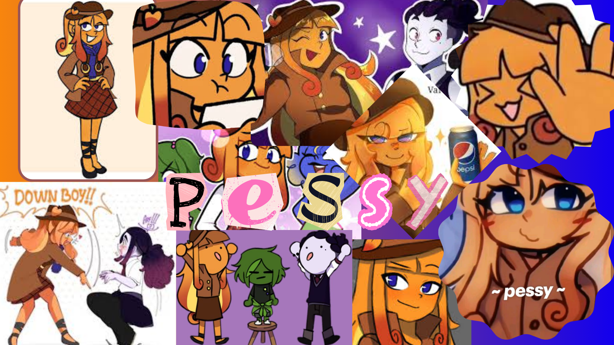

Pessy
É uma personagem de Mundo Torajo dublado pela Fhany. A fruta da pessy e um pêssego, ela tem pele laranja, cabelo laranja com partes vinho por trás e na frente mas por dentro amarelo, olhos azuis,usa um chapéu de detetive com tipo uma fita e um pêssego, usa uma saia marrom, e uma roupa de detetive, também usa sapatilha preta. A personalidade da Pessy, do Mundo Torajo, é de uma detetive curiosa, observadora e teórica da conspiração, que adora desvendar mistérios e criar hipóteses, anotando tudo em seu caderno, servindo como um contraponto mais calmo à sua amiga Zulmi. Ela é fascinada por enigmas e segredos, sendo a "detetive" do grupo, sempre tentando entender as ações dos outros e o porquê das coisas, mesmo que confusa ou animada às vezes.